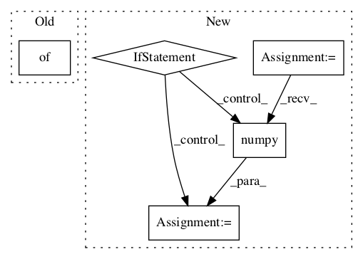

9c51193d4203f796c2adeca69b29a4ea168d7ceb,deepchem/models/tensorgraph/models/gan.py,GAN,predict_gan_generator,#GAN#Any#Any#Any#Any#,440
Before Change
batch_size = len(conditional_inputs[0])
if noise_input is None:
noise_input = self.get_noise_batch(batch_size)
batch = {}
batch[self.noise_input] = noise_input
for layer, value in zip(self.conditional_inputs, conditional_inputs):
batch[layer] = value
return self.predict_on_generator(After Change
noise_input = self.get_noise_batch(batch_size)
inputs = [noise_input]
inputs += conditional_inputs
inputs = [i.astype(np.float32) for i in inputs]
pred = self.generators[generator_index](inputs, training=False)
if tf.executing_eagerly():
pred = pred.numpy()
else:
pred = pred.eval(session=self.session)
return pred
class WGAN(GAN):In pattern: SUPERPATTERN
Frequency: 3
Non-data size: 5
Instances Project Name: deepchem/deepchem
Commit Name: 9c51193d4203f796c2adeca69b29a4ea168d7ceb
Time:
Author: null
File Name: deepchem/models/tensorgraph/models/gan.py
Class Name: GAN
Method Name: predict_gan_generator
Project Name: tensorflow/models
Commit Name: bc324fda2866eab986a604b19272137f9006a603
Time:
Author: null
File Name: official/vision/beta/tasks/semantic_segmentation.py
Class Name: SemanticSegmentationTask
Method Name: reduce_aggregated_logs
Project Name: deepchem/deepchem
Commit Name: b68db1aaf6abe4d2cea8321cc6f1564228dd60f5
Time:
Author: null
File Name: deepchem/models/tensorgraph/models/seqtoseq.py
Class Name: SeqToSeq
Method Name: predict_from_embeddings